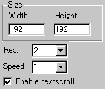
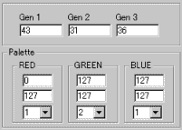

|
This applet visualises a famous plasma effect.
[For more technical
information about the available parameters, click here.]
Most parameters are self-explanatory and you can
always see brief description of each parameter by moving the mouse
pointer over the wizard.
 |
First, define the applet size and its resolution "Width",
"Height", and "Resolution".
Resolution works as a stretcher value for the internally calculated
image. If you want high quality result, set this to one.
|
|
Then you decide if textscroll function is
enabled by checking "Enable textscroll" box.
You can change the rotation speed of the plasma
at "Speed" parameter.
|
 |
Plasma is generated
by 3 different generators Gen1, Gen2, Gen3.
Gen1 is a smoothing parameter, with which fog and psychedelic
effect in two extreme cases can be achieved. |
Gen2 and Gen3 are xy stretchers respectively.
As for colouring, we provide a little complex palette
system. I'm afraid, but I need to go a bit into math to illustrate
how the applet utilises colour.
Each RGB channel consists of three parameters. Consider
Rn, Gn, Bn (n=1, 2, 3) represent the available
9 parameters for the palette system. The final palette is determined
by the following formula:
Red = (sin(r*PI*2/(256/R3
))*R1 )+R2
Green= (sin(r*PI*2/(256/G3))*G1)+G2
Blue = (sin(r*PI*2/(256/B3 ))*B1 )+B2 |
Here, r steps from 0 to 255. R1, R2, G2, G2, B1,
and B2 range from 0 to 255, while R3, G3, and B3 rage from 1 to
8.
There isn't easy way of explaining this, but I recommend
you to experiment various values starting with the default setting
until you get the palette you want.
Proceed to the textscroll
menu if you have checked the textscroll box; otherwise go to
the expert menu.
|